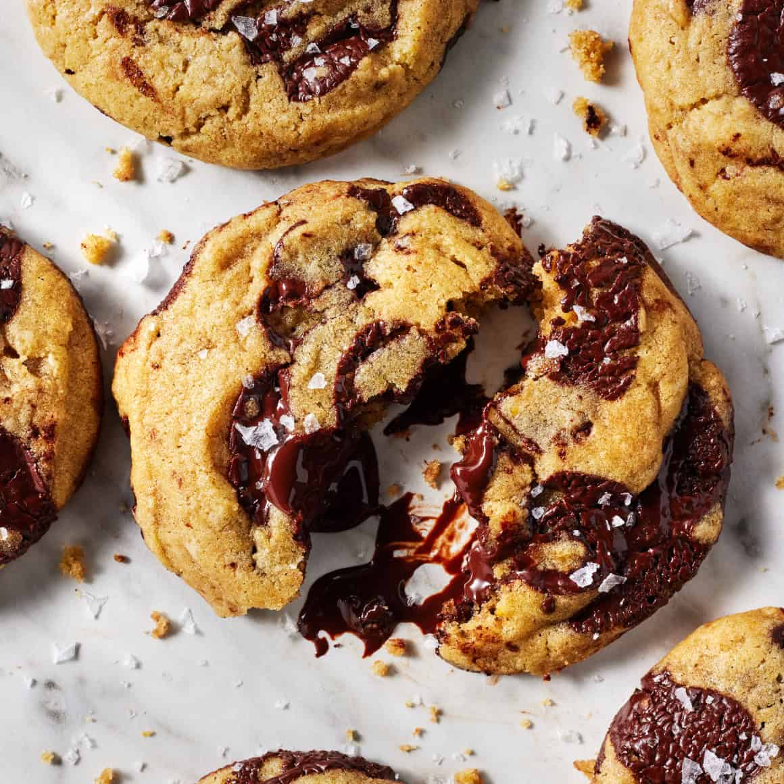

Chocolate Chip Cookie Recipe
Makes: about 16–18 cookies
Bake: 350°F / 175°C for 9–12 minutes

Ingredients
- ½ cup (113 g) unsalted butter, softened
- ½ cup (100 g) brown sugar
- ¼ cup (50 g) granulated sugar
- 1 large egg
- 1 tsp vanilla extract
- 1¼ cups (160 g) all-purpose flour
- ½ tsp baking soda
- ½ tsp salt
- ¾–1 cup (130–170 g) chocolate chips
- Optional: flaky sea salt for the top
Instructions
- Preheat the oven to 350°F / 175°C. Line a baking sheet with parchment paper.
- Cream the butter and sugars together until smooth and fluffy, about 2 minutes.
- Mix in the egg and vanilla until combined.
- Add the flour, baking soda, and salt. Mix just until you no longer see dry flour. Don’t overmix.
- Fold in the chocolate chips.
- Scoop the dough into roughly 2-tablespoon balls and place them a couple inches apart on the baking sheet.
- Bake for 9–12 minutes. Take them out when the edges look set but the centers still look slightly underdone. That slightly suspicious-looking center is the secret to chewy-cookie glory.
- Leave them on the baking sheet for 5–10 minutes before moving them. Sprinkle with flaky salt if you want.
For extra chewy cookies, chill the dough for 30 minutes before baking.